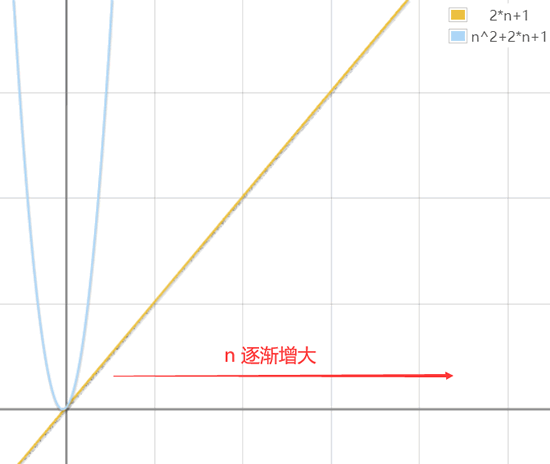

时间复杂度和空间复杂度（详解版）
在学习具体的数据结构和算法之前，每一位初学者都要掌握一个技能，即善于运用时间复杂度和空间复杂度来衡量一个算法的运行效率。
所谓算法，即解决问题的方法。同一个问题，使用不同的算法，虽然得到的结果相同，但耗费的时间和资源肯定有所差异。就比如拧一个螺母，扳手和钳子都可以胜任，但使用钳子拧螺母肯定没有扳手的效率高。
图 1 解决问题的方式有多种
这也就意味着，如果解决问题的算法有多种，我们就需要从中选出最好的那一个。那么，怎么判断哪个算法更好（或者更优）呢？
根据算法编写出的程序，运行时间更短，运行期间占用的内存更少，该算法的运行效率就更高，算法也就更好。
那么，如何衡量一个算法所编写出程序的运行效率呢？数据结构中，用时间复杂度来衡量程序运行时间的多少；用空间复杂度来衡量程序运行所需内存空间的大小。
实际场景中，我们更喜欢用一个估值来表示算法所编程序的运行时间。所谓估值，即估计的、并不准确的值。注意，虽然估值无法准确的表示算法所编程序的运行时间，但它的得来并非凭空揣测，需要经过缜密的计算后才能得出。
也就是说，表示一个算法所编程序运行时间的多少，用的并不是准确值（事实上也无法得出），而是根据合理方法得到的预估值。
那么，如何预估一个算法所编程序的运行时间呢？很简单，先分别计算程序中每条语句的执行次数，然后用总的执行次数间接表示程序的运行时间。
以一段简单的 C 语言程序为例，预估出此段程序的运行时间：
再举一个例子：
要知道，当 n、m 都无限大时，我们完全就可以认为 n==m。在此基础上，2*n*m+2*n+1 又可以简化为 2*n2+2*n+1，这就是此段程序在最坏情况下的运行时间，也就是此段程序的频度。
如果比较以上 2 段程序的运行时间，即比较 2n+1 和 2*n2+2*n+1 的大小，显然当 n 无限大时，前者要远远小于后者（如图 2 所示）。
显然，第 1 段程序的运行时间更短，运行更快。
思考一个问题，类似 2n+1、2*n2+2*n+1 这样的频度，还可以再简化吗？答案是肯定的。
以 2n+1 为例，当 n 无限大时，是否在 2n 的基础上再做 +1 操作，并无关紧要，因为 2n 和 2n+1 当 n 无限大时，它们的值是无限接近的。甚至于我们还可以认为，当 n 无限大时，是否给 n 乘 2，也是无关紧要的，因为 n 是无限大，2*n 也是无限大。
再以无限大的思想来简化 2*n2+2*n+1。当 n 无限大的：
也许很多读者对于“使用无限大的思想”简化频度表达式，并不是很清楚。没关系，这里给大家总结一下，在数据结构中，频度表达式可以这样简化：
得到最简频度的基础上，为了避免人们随意使用 a、b、c 等字符来表示运行时间，需要建立统一的规范。数据结构推出了大 O 记法（注意，是大写的字母 O，不是数字 0）来表示算法（程序）的运行时间。发展至今，此方法已为大多数人所采纳。
大 O 记法的表示方法也很简单，格式如下：
如下列举了常用的几种时间复杂度，以及它们之间的大小关系：
要知道每一个算法所编写的程序，运行过程中都需要占用大小不等的存储空间，例如：
首先，程序自身所占用的存储空间取决于其包含的代码量，如果要压缩这部分存储空间，就要求我们在实现功能的同时，尽可能编写足够短的代码。
程序运行过程中输入输出的数据，往往由要解决的问题而定，即便所用算法不同，程序输入输出所占用的存储空间也是相近的。
事实上，对算法的空间复杂度影响最大的，往往是程序运行过程中所申请的临时存储空间。不同的算法所编写出的程序，其运行时申请的临时存储空间通常会有较大不同。
举个例子：
所以，如果程序所占用的存储空间和输入值无关，则该程序的空间复杂度就为 O(1)；反之，如果有关，则需要进一步判断它们之间的关系：
所谓算法，即解决问题的方法。同一个问题，使用不同的算法，虽然得到的结果相同，但耗费的时间和资源肯定有所差异。就比如拧一个螺母，扳手和钳子都可以胜任，但使用钳子拧螺母肯定没有扳手的效率高。
图 1 解决问题的方式有多种
“好”算法的标准
解决一个问题的方法可能有很多，但能称得上算法的，首先它必须能彻底解决这个问题（称为准确性），且根据其编写出的程序在任何情况下都不能崩溃（称为健壮性）。在满足准确性和健壮性的基础上，还有一个重要的筛选条件，即通过算法所编写出的程序的运行效率。程序的运行效率具体可以从 2 个方面衡量，分别为：注意，程序和算法是完全不同的概念。算法是解决某个问题的想法、思路；而程序是在根据算法编写出来的真正可以运行的代码。例如，要依次输出一维数组中的数据元素的值，首先想到的是使用循环结构，在这个算法的基础上，我们才开始编写程序。
- 程序的运行时间。
- 程序运行所需内存空间的大小。
根据算法编写出的程序，运行时间更短，运行期间占用的内存更少，该算法的运行效率就更高，算法也就更好。
那么，如何衡量一个算法所编写出程序的运行效率呢？数据结构中，用时间复杂度来衡量程序运行时间的多少；用空间复杂度来衡量程序运行所需内存空间的大小。
时间复杂度
判断一个算法所编程序运行时间的多少，并不是将程序编写出来，通过在计算机上运行所消耗的时间来度量。原因很简单，一方面，解决一个问题的算法可能有很多种，一一实现的工作量无疑是巨大的，得不偿失；另一方面，不同计算机的软、硬件环境不同，即便使用同一台计算机，不同时间段其系统环境也不相同，程序的运行时间很可能会受影响，严重时甚至会导致误判。实际场景中，我们更喜欢用一个估值来表示算法所编程序的运行时间。所谓估值，即估计的、并不准确的值。注意，虽然估值无法准确的表示算法所编程序的运行时间，但它的得来并非凭空揣测，需要经过缜密的计算后才能得出。
也就是说，表示一个算法所编程序运行时间的多少，用的并不是准确值（事实上也无法得出），而是根据合理方法得到的预估值。
那么，如何预估一个算法所编程序的运行时间呢？很简单，先分别计算程序中每条语句的执行次数，然后用总的执行次数间接表示程序的运行时间。
以一段简单的 C 语言程序为例，预估出此段程序的运行时间：
for(int i = 0 ; i < n ; i++) //<- 从 0 到 n，执行 n+1 次
{
a++; //<- 从 0 到 n-1，执行 n 次
}
可以看到，这段程序中仅有 2 行代码，其中：
- for 循环从 i 的值为 0 一直逐增至 n（注意，循环退出的时候 i 值为 n），因此 for 循环语句执行了 n+1 次；
- 而循环内部仅有一条语句，a++ 从 i 的值为 0 就开始执行，i 的值每增 1 该语句就执行一次，一直到 i 的值为 n-1，因此，a++ 语句一共执行了 n 次。
再举一个例子：
for(int i = 0 ; i < n ; i++) // n+1
{
for(int j = 0 ; j < m ; j++) // n*(m+1)
{
num++; // n*m
}
}
读者可结合注释，计算此段程序的频度为：(n+1)+n*(m+1)+n*m，简化后得 2*n*m+2*n+1。值得一提的是，不同程序的运行时间，更多场景中比较的是在最坏条件下程序的运行时间。以上面这段程序为例，最坏条件即指的是当 n、m 都为无限大时此段程序的运行时间。要知道，当 n、m 都无限大时，我们完全就可以认为 n==m。在此基础上，2*n*m+2*n+1 又可以简化为 2*n2+2*n+1，这就是此段程序在最坏情况下的运行时间，也就是此段程序的频度。
如果比较以上 2 段程序的运行时间，即比较 2n+1 和 2*n2+2*n+1 的大小，显然当 n 无限大时，前者要远远小于后者（如图 2 所示）。

图 2 不同程序运行时间的比较
显然，第 1 段程序的运行时间更短，运行更快。
思考一个问题，类似 2n+1、2*n2+2*n+1 这样的频度，还可以再简化吗？答案是肯定的。
以 2n+1 为例，当 n 无限大时，是否在 2n 的基础上再做 +1 操作，并无关紧要，因为 2n 和 2n+1 当 n 无限大时，它们的值是无限接近的。甚至于我们还可以认为，当 n 无限大时，是否给 n 乘 2，也是无关紧要的，因为 n 是无限大，2*n 也是无限大。
再以无限大的思想来简化 2*n2+2*n+1。当 n 无限大的：
- 首先，常数 1 是可以忽略不计的；
- 其次，对于指数级的 2*n2 来说，是否在其基础上加 2*n，并无关紧要；
- 甚至于，对于是否给 n2 乘 2，也可以忽略。
也许很多读者对于“使用无限大的思想”简化频度表达式，并不是很清楚。没关系，这里给大家总结一下，在数据结构中，频度表达式可以这样简化：
- 去掉频度表达式中，所有的加法常数式子。例如 2n2+2n+1 简化为 2n2+2n ；
- 如果表达式有多项含有无限大变量的式子，只保留一个拥有指数最高的变量的式子。例如 2n2+2n 简化为 2n2；
- 如果最高项存在系数，且不为 1，直接去掉系数。例如 2n2 系数为 2，直接简化为 n2 ；
事实上，对于一个算法（或者一段程序）来说，其最简频度往往就是最深层次的循环结构中某一条语句的执行次数。例如 2n+1 最简为 n，实际上就是 a++ 语句的执行次数；同样 2n2+2n+1 简化为 n2，实际上就是最内层循环中 num++ 语句的执行次数。
得到最简频度的基础上，为了避免人们随意使用 a、b、c 等字符来表示运行时间，需要建立统一的规范。数据结构推出了大 O 记法（注意，是大写的字母 O，不是数字 0）来表示算法（程序）的运行时间。发展至今，此方法已为大多数人所采纳。
大 O 记法的表示方法也很简单，格式如下：
O(频度)
例如，用大 O 记法表示上面 2 段程序的运行时间，则上面第一段程序的时间复杂度为 O(n)，第二段程序的时间复杂度为 O(n2)。其中，这里的频度为最简之后所得的频度。
如下列举了常用的几种时间复杂度，以及它们之间的大小关系：
O(1)常数阶 < O(logn)对数阶 < O(n)线性阶 < O(n2)平方阶 < O(n3)(立方阶) < O(2n) (指数阶)
注意，这里仅介绍了以最坏情况下的频度作为时间复杂度，而在某些实际场景中，还可以用最好情况下的频度和最坏情况下的频度的平均值来作为算法的平均时间复杂度。
空间复杂度
和时间复杂度类似，一个算法的空间复杂度，也常用大 O 记法表示。要知道每一个算法所编写的程序，运行过程中都需要占用大小不等的存储空间，例如：
- 程序代码本身所占用的存储空间；
- 程序中如果需要输入输出数据，也会占用一定的存储空间；
- 程序在运行过程中，可能还需要临时申请更多的存储空间。
首先，程序自身所占用的存储空间取决于其包含的代码量，如果要压缩这部分存储空间，就要求我们在实现功能的同时，尽可能编写足够短的代码。
程序运行过程中输入输出的数据，往往由要解决的问题而定，即便所用算法不同，程序输入输出所占用的存储空间也是相近的。
事实上，对算法的空间复杂度影响最大的，往往是程序运行过程中所申请的临时存储空间。不同的算法所编写出的程序，其运行时申请的临时存储空间通常会有较大不同。
举个例子：
int n;
scanf("%d", &n);
int a[10];
通过分析不难看出，这段程序在运行时所申请的临时空间，并不随 n 的值而变化。而如果将第 3 行代码改为：int a[n];此时，程序运行所申请的临时空间，和 n 值有直接的关联。
所以，如果程序所占用的存储空间和输入值无关，则该程序的空间复杂度就为 O(1)；反之，如果有关，则需要进一步判断它们之间的关系：
- 如果随着输入值 n 的增大，程序申请的临时空间成线性增长，则程序的空间复杂度用 O(n) 表示;
- 如果随着输入值 n 的增大，程序申请的临时空间成 n2 关系增长，则程序的空间复杂度用 O(n2) 表示；
- 如果随着输入值 n 的增大，程序申请的临时空间成 n3 关系增长，则程序的空间复杂度用 O(n3) 表示；
- 等等。
在多数场景中，一个好的算法往往更注重的是时间复杂度的比较，而空间复杂度只要在一个合理的范围内就可以。
关注公众号「站长严长生」，在手机上阅读所有教程，随时随地都能学习。内含一款搜索神器，免费下载全网书籍和视频。

微信扫码关注公众号